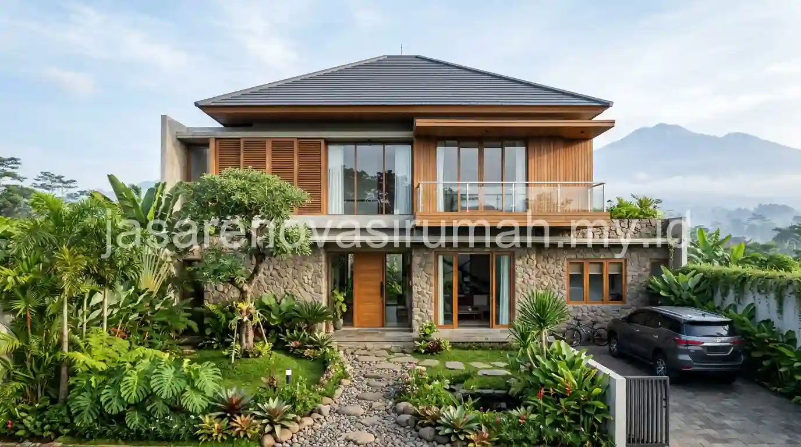
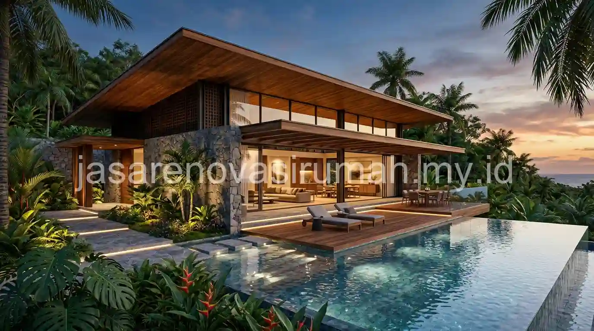

Jasa arsitek Malang yang profesional mengubah keinginan klien menjadi rancangan rumah yang estetis, sesuai iklim, dan aman secara struktur, lengkap dengan gambar kerja yang bisa dipakai kontraktor serta pendampingan saat kontrak dan pelaksanaan. Arsitek berlisensi IAI bekerja dengan tahapan yang jelas, mulai dari diskusi kebutuhan, konsep, gambar kerja, hingga pengawasan berkala agar hasil bangunan sesuai rencana.
Banyak pemilik lahan memulai pembangunan langsung dari tukang atau kontraktor, lalu menyadari kemudian bahwa denah kurang nyaman atau anggaran melebar. Melibatkan arsitek sejak awal membantu memutuskan hal-hal penting itu di atas kertas, ketika perubahan masih murah.
Apa Saja yang Dikerjakan Jasa Arsitek dan Apa Bedanya dengan Tukang atau Desainer Biasa?
Arsitek merancang keseluruhan bangunan, meliputi denah, tampak, struktur, dan detail konstruksi, sedangkan tukang berfokus pada pelaksanaan dan desainer interior berfokus pada tata ruang dalam.
Cakupan kerja arsitek biasanya meliputi:
- Menggali kebutuhan ruang, gaya hidup, dan anggaran keluarga.
- Merancang denah dan tampak sesuai bentuk lahan, arah matahari, dan angin.
- Berkoordinasi dengan perencana struktur dan utilitas.
- Menyusun gambar kerja dan spesifikasi material yang menjadi dasar RAB.
- Mendampingi proses pemilihan kontraktor dan pengawasan berkala.
Perbedaan ini penting karena kesalahan pada tahap rancangan, misalnya sirkulasi udara yang buruk atau bentang struktur yang tidak efisien, sulit diperbaiki setelah bangunan berdiri. Untuk kebutuhan tata ruang dalam yang lebih detail, tahap berikutnya bisa dilanjutkan dengan jasa desain interior Malang agar tampilan dalam dan luar rumah selaras.
Seperti Apa Karakter Desain Rumah Minimalis Modern Tropis yang Cocok untuk Malang?
Rumah minimalis modern tropis untuk Malang umumnya memakai atap dengan overhang lebar, bukaan besar untuk sirkulasi udara silang, dan material alami yang tahan curah hujan, dengan garis bentuk yang bersih.
Malang berada di dataran tinggi dengan udara yang umumnya lebih sejuk dibanding kota pesisir Jawa Timur, tetapi curah hujan pada musim penghujan tetap tinggi. Karena itu, perancangan biasanya menyeimbangkan dua kebutuhan: bukaan yang cukup agar rumah tidak lembap, dan perlindungan dari tampias hujan agar dinding dan kusen awet.
Beberapa strategi desain yang lazim diterapkan:
- Atap miring dengan overhang lebar untuk melindungi dinding dari hujan dan sinar matahari.
- Ventilasi silang dan bukaan tinggi agar udara bergerak dan kelembapan turun.
- Taman kecil atau void yang menghadirkan cahaya alami ke bagian tengah rumah.
- Palet material alami seperti kayu, batu, dan plester ekspos dengan warna netral.
Pendekatan ini menjaga tampilan tetap modern dan bersih sambil menjawab kondisi iklim, sehingga rumah nyaman dihuni tanpa terlalu bergantung pada pendingin ruangan.

Mengapa Arsitek Berlisensi IAI Penting untuk Proyek Rumah Anda?
Arsitek berlisensi dan tergabung dalam Ikatan Arsitek Indonesia (IAI) terikat pada standar profesi dan kode etik, sehingga ada acuan pertanggungjawaban atas mutu perancangan yang dihasilkan.
Keanggotaan dan legalitas praktik arsitek tentu perlu diverifikasi langsung oleh calon klien, misalnya dengan meminta bukti keanggotaan dan melihat portofolio bangunan yang sudah terbangun. Arsitek yang terbuka soal pengalaman dan proses kerjanya biasanya lebih mudah diajak berdiskusi, terutama saat anggaran dan keinginan klien perlu diseimbangkan.
Selain itu, arsitek profesional lazim menuangkan lingkup pekerjaan dan tahapan pembayaran dalam kontrak tertulis. Kebiasaan ini sejalan dengan prinsip yang dibahas pada panduan kontraktor renovasi rumah Jawa Timur, yakni bahwa kesepakatan tertulis melindungi kedua belah pihak.
Bagaimana Arsitek Menerjemahkan Keinginan Klien ke Gambar Kerja?
Arsitek menerjemahkannya lewat tahapan bertingkat, dimulai dari wawancara kebutuhan, sketsa konsep, pengembangan desain, hingga gambar kerja lengkap yang siap dipakai untuk penawaran kontraktor.
Berikut gambaran alur kerja yang umum dijalani klien:
| Tahap | Keluaran | Peran Klien |
|---|---|---|
| Briefing kebutuhan | Daftar kebutuhan ruang dan batas anggaran | Menyampaikan gaya hidup dan prioritas |
| Konsep desain | Sketsa denah, tampak, dan gambaran massa bangunan | Memberi tanggapan dan memilih arah |
| Pengembangan desain | Render 3D, pemilihan material, penyesuaian denah | Menyetujui desain sebelum masuk gambar teknis |
| Gambar kerja | Denah, potongan, detail, dan spesifikasi | Memeriksa dan menyetujui dokumen akhir |
| Pendampingan pelaksanaan | Bantuan seleksi kontraktor dan kunjungan pengawasan | Berkoordinasi bila ada perubahan lapangan |
Render 3D membantu klien membayangkan hasil akhir sehingga revisi dilakukan sebelum pembangunan dimulai. Gambar kerja yang lengkap juga memudahkan kontraktor menyusun penawaran yang setara, sehingga perbandingan harga menjadi lebih adil. Setelah rancangan matang, klien dapat menghitung anggaran dengan mengacu pada panduan estimasi biaya renovasi rumah Malang, sementara gambaran biaya perancangan sendiri dibahas pada tarif jasa arsitek Malang.
Apa Itu Pendampingan Kontrak dan Pengawasan oleh Arsitek?
Pendampingan kontrak berarti arsitek membantu klien menilai penawaran kontraktor, memastikan spesifikasi sesuai gambar, dan melakukan kunjungan berkala untuk memeriksa kesesuaian pekerjaan di lapangan.
Layanan ini sering diabaikan karena dianggap menambah biaya, padahal justru berfungsi sebagai pengaman. Arsitek yang mengenal detail rancangan dapat mengenali penyimpangan sejak dini, misalnya ukuran kolom yang berbeda dari gambar atau material yang diganti tanpa persetujuan. Cakupan pengawasan, apakah berkala atau harian, sebaiknya disepakati tertulis sejak awal agar ekspektasi kedua pihak sama.
Kesalahan Umum Saat Menggunakan Jasa Arsitek
Kesalahan yang paling sering terjadi adalah tidak menyampaikan batas anggaran sejak awal, sehingga desain berkembang melebihi kemampuan biaya dan harus dirombak.
Kesalahan lain yang perlu dihindari:
- Memilih arsitek hanya dari tampilan render tanpa melihat bangunan yang sudah terbangun.
- Melewatkan diskusi kebutuhan jangka panjang, seperti rencana penambahan kamar atau lantai.
- Mengubah keputusan besar setelah gambar kerja selesai tanpa membahas dampak biayanya.
- Membiarkan kontraktor mengganti spesifikasi tanpa sepengetahuan arsitek.
Pada akhirnya, jasa arsitek Malang yang tepat adalah yang mampu menyeimbangkan estetika, kenyamanan iklim, kekuatan struktur, dan kemampuan anggaran Anda, lalu mendampingi hingga rancangan benar-benar terwujud di lapangan. Jika Anda sudah memiliki lahan atau rumah yang ingin dirancang ulang, siapkan gambaran kebutuhan ruang dan batas anggaran, lalu ajukan konsultasi awal untuk mendiskusikan arah desainnya.
Kesimpulan
Jasa arsitek Malang berlisensi IAI membantu Anda mewujudkan rumah minimalis modern tropis yang estetis, nyaman terhadap iklim, dan aman secara struktur, lengkap dengan gambar kerja serta pendampingan kontrak.
Melibatkan arsitek sejak awal jauh lebih murah dibanding memperbaiki kesalahan rancangan setelah bangunan berdiri.
Hubungi kami di 0889-8964-3555 atau kunjungi kantor kami di Jl. Soekarno Hatta No. 45, Malang untuk konsultasi gratis sebelum mulai merancang rumah Anda.
FAQ Seputar Jasa Arsitek Malang
Ainur Reza
Penulis Profesional & Praktisi Konstruksi
Ainur Reza adalah seorang penulis profesional yang memiliki ketertarikan mendalam pada dunia arsitektur dan konstruksi. Dengan pengalaman bertahun-tahun mengamati tren renovasi rumah, ia aktif membagikan panduan praktis, tips RAB, dan wawasan seputar material bangunan untuk membantu pemilik rumah mewujudkan hunian impian mereka dengan anggaran yang efisien.